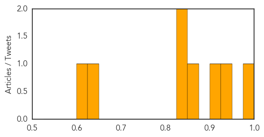
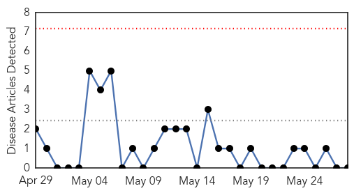

Measles
30-Day Web Trend
0 alerts, 0 warnings

30-Day Twitter Trend
0 alerts, 0 warnings

Article Locations

Article Confidences
Top Articles:
- 0.993
- No more measles cases in Hamilton « LiveNews.co.nz
- 0.935
- Urgent funding needed to prevent imminent closure of health care projects in Iraq - Iraq
- 0.909
- Sky Tower climbers contacted over measles scare
- 0.857
- In Vietnam, an anatomy of a measles outbreak
- 0.842
- N.J. confirms patient with measles attended Middlesex County funeral home
- 0.825
- Where Does U.S. Measles Immunization Rate Rank in World?
- 0.637
- Measles cases in Taipei duty-free shop rise to 10
- 0.603
- Religious Schools are Not Immune – The Startling Low Rate of Vaccine Policies in Jewish Schools
Top Tweets:
-
No tweets found for May 28, 2015
Pertussis
30-Day Web Trend
0 alerts, 0 warnings

30-Day Twitter Trend
0 alerts, 0 warnings

Article Locations

Article Confidences

Top Articles:
-
No articles found for May 28, 2015
Top Tweets:
-
No tweets found for May 28, 2015